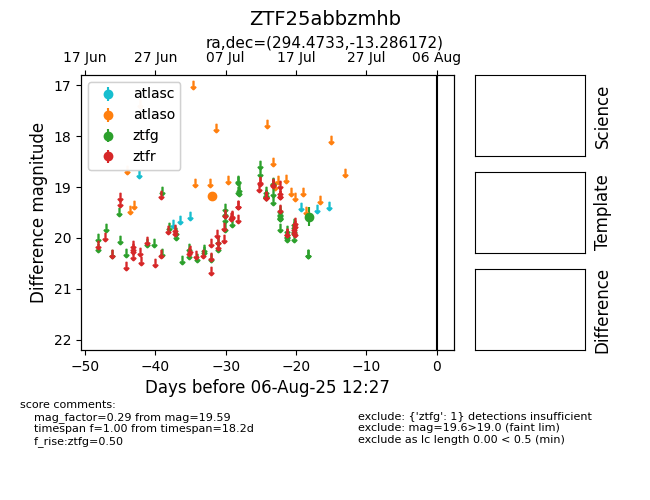

Target ZTF25abbzmhb at 2025-08-06 17:07, see:
FINK: fink-portal.org/ZTF25abbzmhb
Lasair: lasair-ztf.lsst.ac.uk/objects/ZTF25abbzmhb
ALeRCE: alerce.online/object/ZTF25abbzmhb
alt names
ZTF25abbzmhb (ztf,fink)
coordinates:
equatorial (ra, dec) = (294.4733,-13.28617)
galactic (l, b) = (26.0420,-16.21025)
photometry
last atlaso=19.18, ztfg=19.59
1 atlaso, 1 ztfg detections
